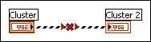

You have wired two clusters that contain different contents or have different tab orders. In order to wire clusters successfully, clusters must have the same number of elements, and the corresponding elements must match data types.
To correct this error, add, remove, or replace elements from one of the clusters to make them match the elements in the other cluster.